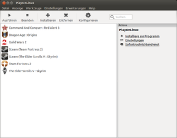
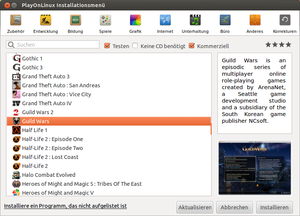
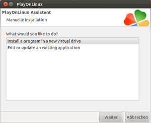
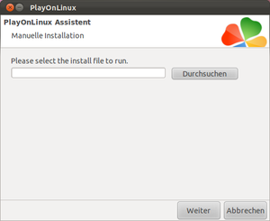
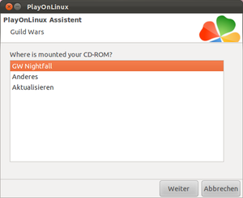
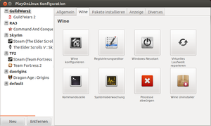
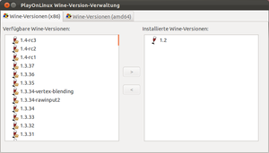
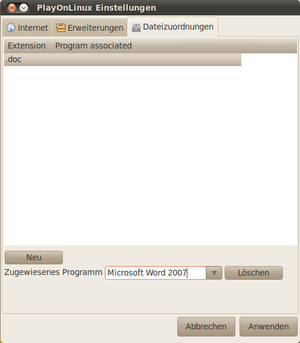
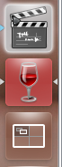
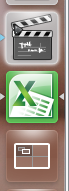

PlayOnLinux
Dieser Artikel wurde für die folgenden Ubuntu-Versionen getestet:
Ubuntu 16.04 Xenial Xerus
Ubuntu 14.04 Trusty Tahr
Zum Verständnis dieses Artikels sind folgende Seiten hilfreich:
PlayOnLinux  ist ein grafisches Frontend für Wine. Es hilft bei der Installation, Konfiguration und Deinstallation von Windows-Anwendungen unter Linux. Außerdem ermöglicht es, jedes Windows-Programm in einem separaten Wine-Präfix zu installieren, mit dem einem Programm eine andere Wine-Version zugewiesen werden kann bzw. einzelne Programmen unabhängig von einander konfiguriert werden können. So ist es zum Beispiel möglich, Spiele, die unter aktuellen Wine-Versionen nicht mehr laufen, mit einer älteren Wine-Version zu betreiben.
ist ein grafisches Frontend für Wine. Es hilft bei der Installation, Konfiguration und Deinstallation von Windows-Anwendungen unter Linux. Außerdem ermöglicht es, jedes Windows-Programm in einem separaten Wine-Präfix zu installieren, mit dem einem Programm eine andere Wine-Version zugewiesen werden kann bzw. einzelne Programmen unabhängig von einander konfiguriert werden können. So ist es zum Beispiel möglich, Spiele, die unter aktuellen Wine-Versionen nicht mehr laufen, mit einer älteren Wine-Version zu betreiben.
Eine kommerzielle Alternative zu PlayOnLinux ist CrossOver.
Installation¶
PlayOnLinux kann aus den offiziellen Paketquellen installiert [1] werden:
playonlinux (multiverse)
 mit apturl
mit apturl
Paketliste zum Kopieren:
sudo apt-get install playonlinux
sudo aptitude install playonlinux
Fremdquelle¶
Die aktuelle Version ist nicht immer in den offiziellen Ubuntu-Quellen enthalten, kann aber von der Herstellerseite bezogen werden. Dazu den Verifikationsschlüssel für PlayOnLinux-Fremdquelle herunterladen und den Paketquellen hinzufügen:
wget -q "http://deb.playonlinux.com/public.gpg" -O- | sudo apt-key add - sudo wget "http://deb.playonlinux.com/playonlinux_$(lsb_release -cs).list" -O /etc/apt/sources.list.d/playonlinux.list
Hinweis!
Zusätzliche Fremdquellen können das System gefährden.
Nach dem Aktualisieren der Paketquellen kann folgendes Paket installiert werden:
playonlinux (ppa)
mit apturl
Paketliste zum Kopieren:
sudo apt-get install playonlinux
sudo aptitude install playonlinux
Übersicht¶
Installierte Programme kann man bei Ubuntu-Varianten mit einem Anwendungsmenü über den Eintrag "Spiele -> PlayOnLinux" starten [2].

Über diese Übersicht kann man auch jede installierte Anwendung konfigurieren und deinstallieren.
Installation von Programmen¶
Es gibt zwei Wege, ein Windows-Programm mit PlayOnLinux zu installieren. Für einige Programme gibt es bereits vorgefertigte Skripte, die die Installation etwas automatisieren. Zu diesen Skripten kommen ständig neue hinzu. Hierbei laden die Skripte dann z.B. die aktuellste DirektX-Version herunter, die das jeweilige Spiel benötigt.
Im Folgenden wird zuerst die manuelle Installation eines Programms beschrieben, danach die skriptgesteuerte.
Allgemeine Installationsinformation¶
Generell legt PlayOnLinux für jedes installierte Programm einen eigenen Wine-Prefix im Ordner ~/.PlayOnLinux/wineprefix an.
Manuelle Installation von Programmen¶
Zur Installation eines Programms  "Installieren" in der Symbolleiste. Folgender Dialog öffnet sich:
"Installieren" in der Symbolleiste. Folgender Dialog öffnet sich:

Zur manuellen Installation "Installiere ein Programm, dass nicht aufgelistet ist"
"Weiter" in dem sich öffnenden Fenster Manuelle Installation führt zu diesem Dialog:

In diesem Dialog kann man nun entscheiden, ob man ein neues Programm installieren will ("Install a program in a new virtual driver") , einen Patch einspielen will ("Edit or update an existing application") oder ein Wine-Prefix löschen will ("Delete a prefix"). auf "Install a program in a new wine-prefix" und auf "Weiter".
Im nächsten Schritt gibt man dem neuen Wine-Prefix einen Namen. auf 'Weiter'.
Im folgenden Schritt muss ausgewählt werden, was vor der Installation getan werden soll. Zu Auswahl stehen die Optionen, eine Wine Version auszuwählen ('Einem Programm eine Wine-Version zuordnen'), 'Wine konfigurieren' und 'WineTricks benutzen', durch welches sich benötigte Dateien (z.B. *.dll) und Programme manuell installieren lassen. Wählen sie die Punkte aus, die sie verwenden möchten und klicken sie auf weiter. Falls sie nicht sicher sind, was getan werden muss, wählen sie kein Kästchen aus und bestätigen mit 'Weiter'.
Danach werden die ihrer Auswahl entsprechenden Dialoge angezeigt, in denen sie ihre Wahl treffen und mit 'Weiter' bestätigen.
Schließlich erscheint dieser Dialog:

Hier muss man nun durch auf "Durchsuchen" den Pfad zur Installationsdatei (meistens setup.exe) auswählen. Nach einem erneuten auf "Weiter" startet das Windows-Setup-Programm der Anwendung und man folgt weiter den Bildschirmanweisungen des jeweiligen Programms. Nachdem man das Setup mit auf "Fertigstellen" oder "Beenden" abgeschlossen hat, kommt man erneut in den PlayOnLinux-Dialog.
Nun hat man die Möglichkeit, einen Starter in der Übersicht und auf dem Desktop anzulegen. Hat man ein Programm neu installiert, empfiehlt sich dies. Daher man im folgenden Dialog auf "Ja"
Danach muss man den Pfad zur Startdatei des Programms angeben. Hierfür man im folgenden Dialog auf "Durchsuchen" und wählt in der Verzeichnisstruktur die Startdatei aus. Diese liegt in der Regel in einem Wine-Prefix unter ~/.PlayonLinux/wineprefix/.... Bitte beachten, das der Pfad /.PlayonLinux/ versteckt ist.
Hat man die Datei ausgewählt, man auf "Weiter" und vergibt dem Starter einen Namen und entscheidet dann im folgenden Dialog, ob man eine Verknüpfung auf dem Desktop und/oder im Menü von PlayOnLinux erstellen lassen will.
Die Verknüpfung auf dem Desktop wird häufig bereits vom Setup-Programm des Windows-Programms erstellt. Wichtig ist jedoch, dass man im Menü von PlayOnLinux eine Verknüpfung erstellt, da sonst der Eintrag in der Übersicht fehlt und sich das Programm dann nur schlecht konfigurieren oder deinstallieren lässt.
Damit ist die manuelle Installation des Programms beendet und das Programm steht in der PlayOnLinux-Übersicht zu Verfügung.
Automatische Installation per Script¶
Für einige Programme wurden bereits vorgefertigte Installationsskripte in PlayOnLinux hinterlegt. Diese übernehmen die Aufgabe, z.B. die aktuelle für das Spiel benötigte DirektX-Version zu installieren oder das Spiel richtig zu konfigurieren.
Um ein Spiel über ein vorhandenes Skript zu installieren, geht man wie folgt vor. Man auf "Installieren" und kommt in folgenden Dialog.
Hier wählt man durch die Kategorie und dann rechts daneben das vorhandene Skript aus. Bei manchen Skripten erscheint nun im unteren Teil des Fensters eine Beschreibung des Programms oder der Installation.
Danach man auf "Anwenden". Es folgen Dialoge. Eventuell lädt PlayOnLinux vor der Installation einege Dateien aus dem Internet, die zur Verwendung benötigt werden.

Im letzteren Dialog (s.o.) muss man den Pfad zum Installationsmedium auswählen. Ab da arbeitet das Skript größtenteils selbstständig, allerdings darf man den PlayOnLinux-Dialog, der während der Installation erscheint erst bestätigen wenn diese komplett abgeschlossen ist. Jetzt muss man nur noch in einem Dialog entscheiden, ob man eine Verknüpfung auf dem Desktop und/oder im Menü von PlayOnLinux haben möchte.
Patchen eines Programmes¶
Man folgt den Schritten wie unter Manuelle Installation von Programmen beschrieben. In Schritt 4 man allerdings auf "Edit or update an existing application".
Hier wählt man die zu patchende Anwendung aus und auf "Weiter". Im folgenden Dialog wählt man keinen Punkt aus und bestätigt mit 'Weiter'.
Es folgt nun der Dialog zum Auswählen der auszuführenden Datei. auf "Durchsuchen" und den Patch auswählen. auf "Weiter" und der Update-Prozess startet.
Je nach Patch muss man noch verschiedene Fragen des Windows-Installers beantworten.
Anschließend kommt man in einen Dialog, in dem man gefragt wird, ob man einen Shortcut erstellen möchte.
Da man ein Programm gepatcht hat, man hier auf "Nein"
Der Patch ist eingespielt.
Deinstallation von Programmen¶
auf das zu deinstallierende Programm und dann auf "Entfernen" in der Symbolleiste.
Es folgt der Deinstallations-Dialog. Man folgt den Bildschirmanweisungen. Es kommt dabei vor, dass das Programm nur aus der Menüliste in PlayOnLinux verschwindet und man den Wine-Prefix-Ordner noch manuell im Ordner ~/.PlayOnLinux/wineprefix löschen muss.
Wine-Konfiguration über PlayOnLinux¶
Da die Wine-Konfiguration im Artikel Wine ausführlich beschrieben wird, geht dieser Artikel nur auf die Besonderheiten von PlayOnLinux ein. Will man die Wine-Einstellungen eines installierten Programms ändern, so wählt man dieses in der PlayOnLinux-Übersicht per an und dann auf "Konfigurieren" in der Symbolleiste.

Hier gibt es viele Optionen, die getan werden können, u.a.:
- man nun auf "Konfiguriere Wine" und danach auf "Weiter" so kommt man in den in Wine beschriebenen normalen WineCfg-Dialog.
- man nun auf "Registry Editor" und danach auf "Weiter" so kommt man in den Windows-Registry-Editor in dem man die Registrierdatenbank der Wine-Version bearbeiten kann.
Nachdem man hier Einstellungen geändert hat sollte man mit auf "Aktualisiere Wine-Prefix" und danach auf "Weiter" den Wine-Prefix der Anwendung aktualisieren.
Wenn man an der Registrierung etwas geändert hat, kann es auch durchaus sinnvoll sein, mit einem auf "Einen Windows Neustart simulieren" einen Windows-Reboot zu simulieren.
Ist man mit der Konfiguration fertig, man auf "Abbrechen".
Verwalten von Wine-Versionen¶
Eine sehr interessante Funktion von PlayOnLinux ist die Option, verschiedene Wine-Versionen parallel zu installieren und diese einem Programm zuzuweisen. Über den Menüpunkt auf "Werkzeuge" auf "Wine-Versionen verwalten " kommt man in folgenden Dialog.

In diesem Dialog werden alle Wine-Versionen aufgeführt und man kann diese per auf die Versionsnummer und auf "Hinzufügen" installieren. Die Wine-Version wird dann automatisch heruntergeladen und installiert.
Über das Register "Meine Anwendungen" kann man per im unteren Bereich der markierten Anwendung eine Wine-Version zuweisen.
Über einen auf "Schließen" verlässt man den Dialog wieder.
Verwalten von Dateizuordnungen¶
Man kann für einen bestimmten Dateityp ein Standardprogramm, welches mit PlayOnLinux installiert wurde, festlegen. Dafür bietet PlayOnLinux neuerdings eine Funktion an, mit der man seine Dateizuordnungen verwalten kann. Dieses Menü erreicht man, wenn man im Hauptfenster von PlayOnLinux zuerst auf "Einstellungen" und dann auf "Dateizuordnungen" klickt. Über den "Neu"-Button kann man nun von Dateitypen die Dateiendung eingeben (z.B. .doc) um diesen darauf ein "Zugewiesenes Programm" zuzuordnen.

Zusätzlich muss man aber noch bei dem jeweiligen Dateityp PlayOnLinux als Standardanwendung einstellen. Um diesen Dialog zu erreichen, muss man einen Rechtsklick  auf eine beliebige Datei des Dateityps betätigen und darauf "Mit anderer Anwendung öffnen" auswählen. Nun kann man PlayOnLinux auswählen. Zusätzlich sollte man darauf achten, dass der Haken bei "Diese Anwendung für >>"Dateityp"<<-Dateien merken" gesetzt ist.
auf eine beliebige Datei des Dateityps betätigen und darauf "Mit anderer Anwendung öffnen" auswählen. Nun kann man PlayOnLinux auswählen. Zusätzlich sollte man darauf achten, dass der Haken bei "Diese Anwendung für >>"Dateityp"<<-Dateien merken" gesetzt ist.
Weiteres¶
PlayOnLinux bietet eine Vielzahl weiterer Möglichkeiten, die hier alle zu beschreiben den Rahmen des Artikels sprengen würde. Eine gute Anleitung bzw. ein Handbuch zum Download findet man auf der Homepage des Projektes unter. Hier findet man auch immer die aktuellsten Änderungen, Neuerungen und Versionen zum Download.
Problembehebung¶
7z nicht installiert¶
Sollte das Pack-Programm '7z' nicht installiert sein, so meldet 'PlayOnLinux' das als Fehler, daher ist es sinnvoll 7z (Linux-Umsetzung von 7z heißt p7zip) vorher zu installieren.
CD-/DVD-Laufwerk öffnen¶
Bei der Installation eines Programms mit mehreren Datenträgern lässt sich der Datenträger nicht wechseln, da sich das CD-/DVD-Laufwerk nicht mehr öffnen lässt, da es in Gebrauch ist. Mögliche Lösungen:
Man öffnet ein Terminal [3] und gibt folgenden Befehl ein:
wine eject -a
Dies sollte eigentlich alle CD-/DVD-Laufwerke öffnen. Alternativ ersetzt man das
-adurch den Laufwerksbuchstaben, den Wine für das CD-/DVD-Laufwerk vergeben hat.Hilft das nichts, so kann man nur versuchen, die CDs/DVDs auf die Festplatte zu kopieren und die Installation von dort zu starten.
Wenn die CD/DVD länger im Laufwerk ungenutzt ist, hat PlayOnLinux Probleme, auf das Laufwerk zuzugreifen, wenn man die Installation starten will. Dann öffnet man die CD/DVD einmalig mit einem Dateimanager. Danach erkennt auch PlayOnLinux die CD/DVD wieder.
in PlayOnLinux mit Winetricks Komponente nachinstallieren¶
Wie installiert man in ein PlayOnLinux-virtualdrive mit Hilfe von winetricks Windows-Komponenten nach? Etwa, weil PlayOnLinux eine bestimmte DLL o.ä. noch nicht anbietet?
Ein Terminal öffnen (bspw. in PlayOnLinux Laufwerk anwählen -> konfigurieren -> Tab 'Diverses' -> Eine Shell öffnen)
Ggfs. die aktuelle Version von winetricks herunterladen und ausführbar machen.
Winetricks ausführen mit dem Kommando:
WINEPREFIX=/home/<user>/.PlayOnLinux/wineprefix/<virtualdrive> /pfad/zu/winetricks -q <Komponente>
Wine-Icon statt Programm-Icon¶
 
Bei der Desktop-Oberfläche Unity kann es vorkommen, dass anstatt des Programmsymbols das allgemeine Symbol von Wine im Starter angezeigt wird (siehe Abbildungen rechts). Dies kann man einfach ändern, indem man den jeweiligen Programmstarter anpasst und den Eintrag StartupWMClass=PROGRAMM.exe hinzufügt. Die .desktop-Datei sollte dann ungefähr so aussehen:
[Desktop Entry] Encoding=UTF-8 Name=Name des Programms Comment=PlayOnLinux Type=Application Exec=/usr/share/playonlinux/playonlinux --run "[Programmname]" %F Icon=/home/[Benutzername]/.PlayOnLinux//icones/full_size/[IconName] StartupWMClass=[Programmname].exe
Hat man keinen Programmstarter erstellt, kann man dies über das PlayOnLinux-Menü machen. Man wählt im Hauptfenster einfach das Programm aus und drückt in der rechten Leiste auf 'Erstelle ein Shortcut'.
- Erstellt mit Inyoka
-
 2004 – 2017 ubuntuusers.de • Einige Rechte vorbehalten
2004 – 2017 ubuntuusers.de • Einige Rechte vorbehalten
Lizenz • Kontakt • Datenschutz • Impressum • Serverstatus -
Serverhousing gespendet von